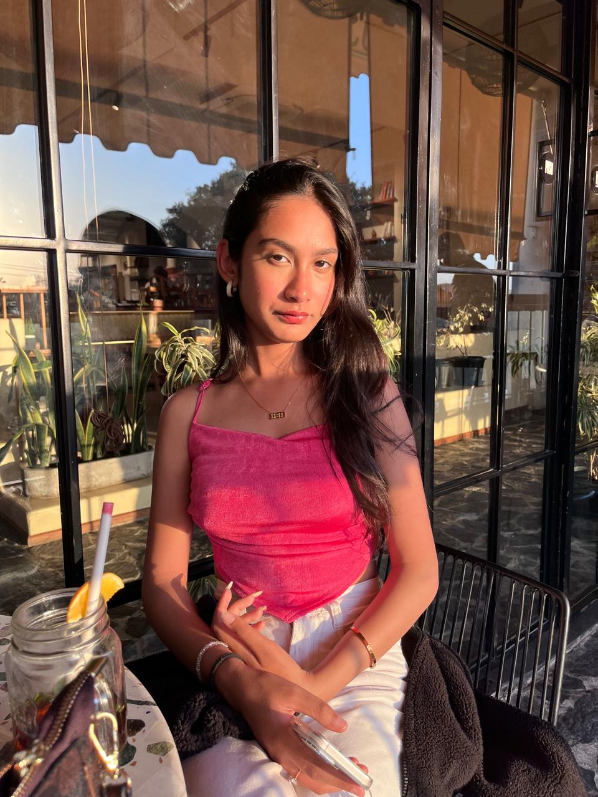

Style Muse
Full-stack recommendation platform designed for personalized outfit suggestions using data-driven matching and user-centric design.
I combine analytical thinking, sustainability insights, and digital skills to build meaningful solutions. My work is centered on turning complex information into practical, user-friendly outcomes that create measurable value.

I am a motivated professional with interests spanning sustainability, data analysis, web development, and user-centered design. My work reflects a balance of structured thinking and creative problem-solving—whether I am analyzing climate-related insights, building digital experiences, or exploring innovative ideas through research and collaboration.
I enjoy turning ideas into practical solutions that are clear, efficient, and impactful. My academic foundation, hands-on experiences, and participation in innovation-driven activities have strengthened my ability to work across technical and strategic challenges.
Worked on modern front-end development tasks, building user-facing interfaces, improving user experience, and contributing to responsive, component-driven design solutions in a professional digital environment.
Worked on sustainability-focused projects involving ESG-aligned reporting, research, and data-driven problem solving. Contributed to analysis and documentation that supports evidence-based environmental decision-making.
Supported project execution, information gathering, and analytical tasks with an emphasis on sustainability, responsible practices, and practical reporting frameworks.
Built responsive web experiences, explored recommender systems, and worked on UX-focused redesigns with a strong focus on usability, accessibility, and user experience.
Research synthesis, reporting, trend analysis, sustainability insights, evidence-based decision support.
HTML, CSS, JavaScript, responsive design, front-end implementation, interactive user interfaces.
User experience strategy, wireframing, prototyping, usability-focused problem solving, interface thinking.
Prompt engineering, AI-assisted ideation, recommendation systems, experimentation and digital innovation.
Planning, execution, documentation, collaboration, and cross-functional project support.
Presentations, stakeholder communication, technical storytelling, and structured documentation.
Full-stack recommendation platform designed for personalized outfit suggestions using data-driven matching and user-centric design.

AI-powered solution for personalized room styling recommendations with a focus on intuitive interactions and smart suggestions.

Improved usability, information flow, and accessibility through a structured redesign grounded in user experience principles.

Conceptualized and simulated a digital design model to understand architecture, logic flow, and computational behavior.
I’m open to opportunities in sustainability, data analysis, digital strategy, UX-focused work, and collaborative projects.